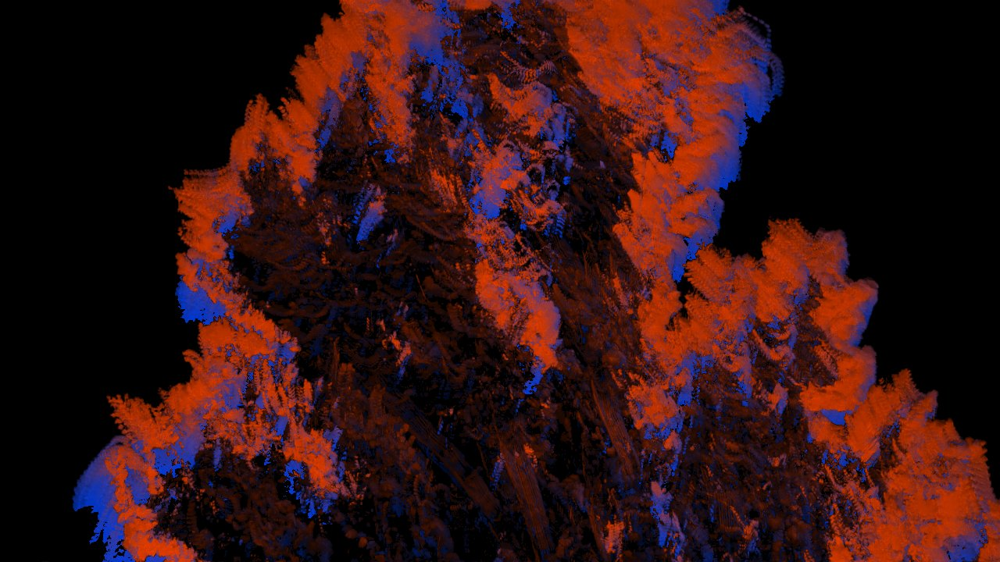

:
gap
gap
333 ms → type a value, or use the keys
[
]
gap auto
measure the clip and pick one
A
mode magnify
amplify slow change
3
split
compare against the original
S
source camera
use the webcam
N
record
save the output as WebM
R
↑↓ choose
⏎ run
esc close
every command also has a key